Очиститель воздуха BORK A803 AirEngine
Искусственный интеллект на страже естественной свежести в вашем доме.
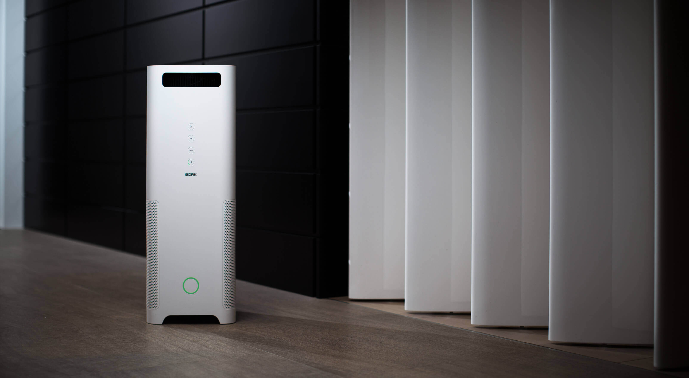Технология AirEngine
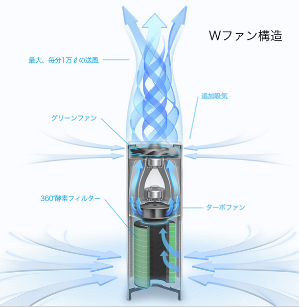Очиститель оснащен двумя вентиляторами для обдува и всасывания.
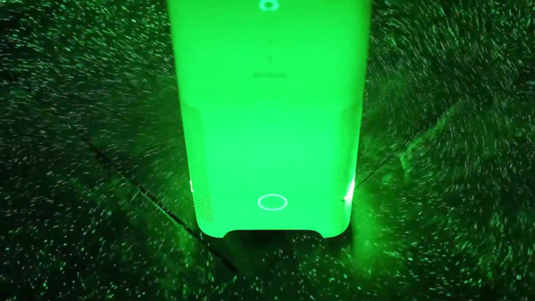Создается мощный воздушный поток, который способствует эффективной циркуляции воздуха в помещении и, как следствие, быстрой фильтрации.
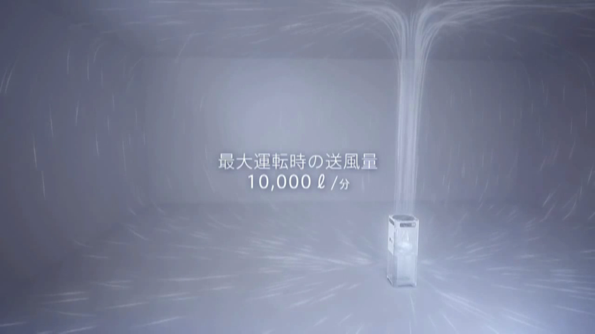Технология GREENFAN
GreenFan – это эксклюзивная технология, запатентованная в Японии и имеющая международный патент.
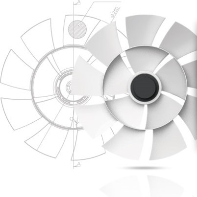За счет особой конструкции лопастей от одного вентилятора генерируется два потока воздуха с различными скоростями. Лопасти были разработаны так, чтобы два типа воздушного потока циркулировали вместе и далее концентрировались в одной точке.
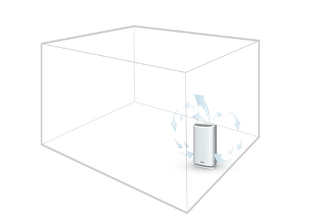Обычный очиститель не обеспечивает качественной циркуляции воздуха
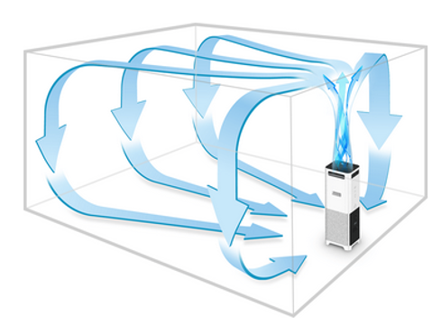При работе А803 воздух подается вверх, движется вдоль потолка и стен, и снова всасывается очистителем. Таким образом, создается мощный циркуляционный воздушный поток, а затем удаляются взвешенные твердые частицы в комнате.
Фильтр GREEN 360
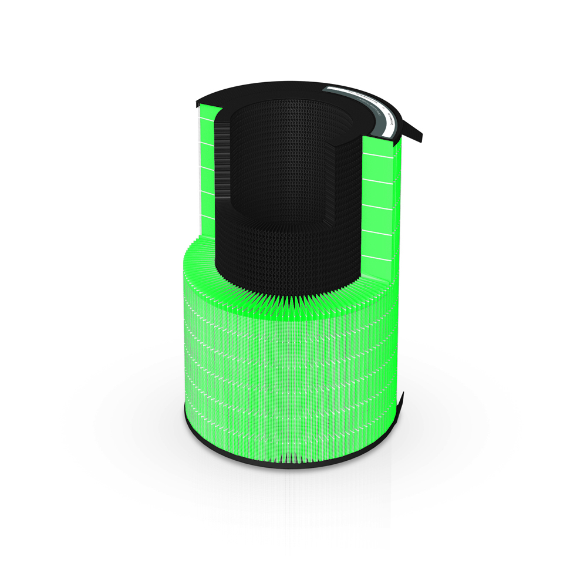Энзим фильтр с антибактериальной пропиткой осуществляет предварительную очистку воздуха, поглощает пыль, плесень, шерсть, уничтожает микробы размером до 0,1 микрона.
Угольный фильтр с каталитическим элементом уничтожает сложные (формальдегид, различные аммониевые соединения, гидроген сульфид) полулетучие органические соединения, включая вредные газы, резкие запахи.
Типовой фильтр НЕРА
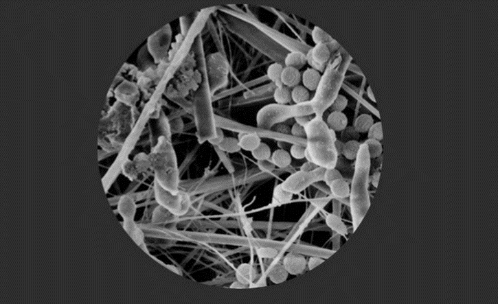Во время эксплуатации на его поверхности и внутри будут развиваться микроорганизмы, загрязняя воздух.
Фильтр Green 360
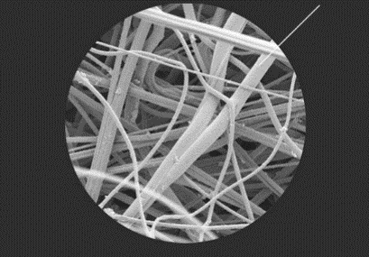Фильтр обладает специальной литической пропиткой, разрушающей органику.
Механизм работы энзим фильтра:
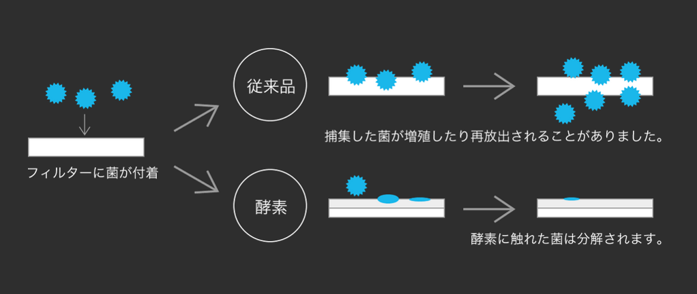Хорошо известно, что клетки бактерий, грибов и высших растений в отличие от клеток животных обладают, как правило, очень мощными клеточными стенками. В связи с этими проблемами пристальное внимание ученых уже давно привлекают специфические ферменты (биологические катализаторы белковой природы), способные разрушать (лизировать) клеточные стенки бактерий, грибов и высших растений.
Литические ферменты, разрушающие клеточные оболочки бактерий, были впервые обнаружены в слюне человека и описаны Александром Флемингом в 1922 году (Fleming, 1922). Вещество назвали лизоцимом, что означает «фермент, растворяющий бактерии».
Именно эти ферменты в группе литических обладают самым широким спектром действия в отношении микроорганизмов. Они способны разрушать клеточные оболочки бактерий, дрожжей, грибов, простейших.
Эффективность и скорость очистки
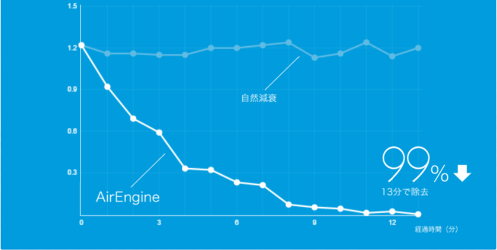Производительность по воздухообмену составляет 10000 литров в минуту (600 м3/час). Сочетание мощного воздушного потока и эффективного фильтра позволяет быстро избавиться от пыли в помещении. Для снижении общего уровня пыли на 99% А803 тратит всего 13 минут.
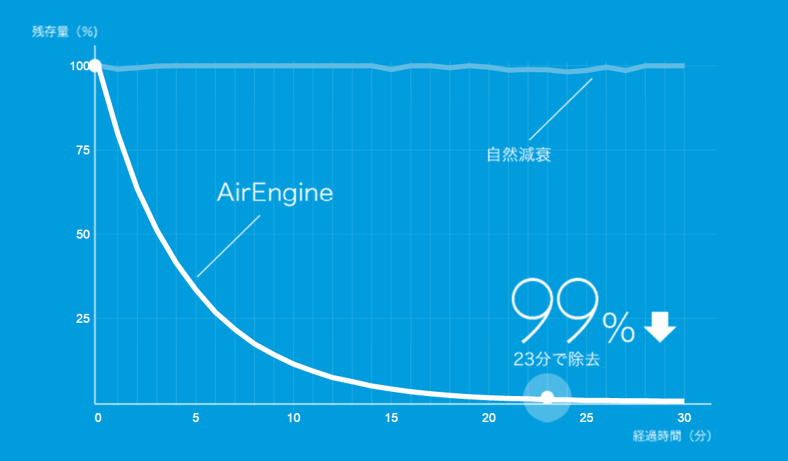Для частиц размером 2,5 мкм и более очистка более чем на 99 % происходит за 23 минуты. Это в три раза быстрее, чем у типовых воздухоочистителей.
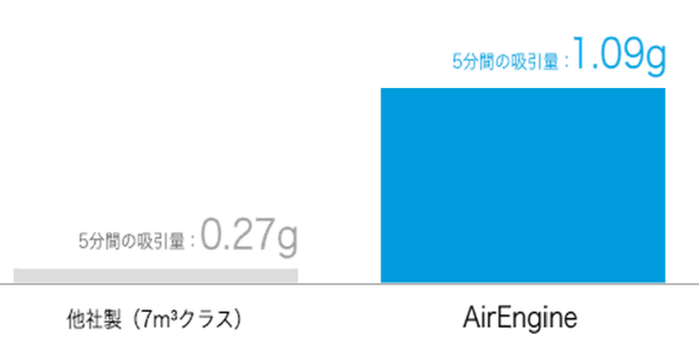Крупные взвешенные частицы, такие как пыльца, трудно удалить из воздуха, если они находятся в другом конце комнаты. Тесты показывают, что А803 делает это в несколько раз эффективнее типовых воздухоочистителей. За 5 минут работы А803 удалил 1,09 грамм пыльцы против 0,27 грамм у другого очистителя.
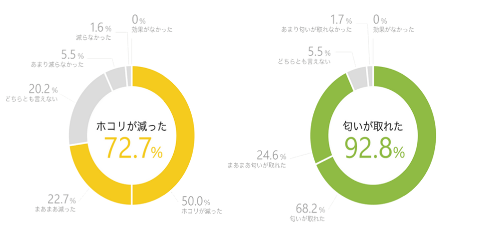Согласно опросу пользователей 72,7% покупателей отмечают снижение количества пыли видимой глазом, после использования А803. Для запаха, например, домашних животных и продуктов питания, результат составляет 92,8 процента.
Удаление менее чем за 10 минут
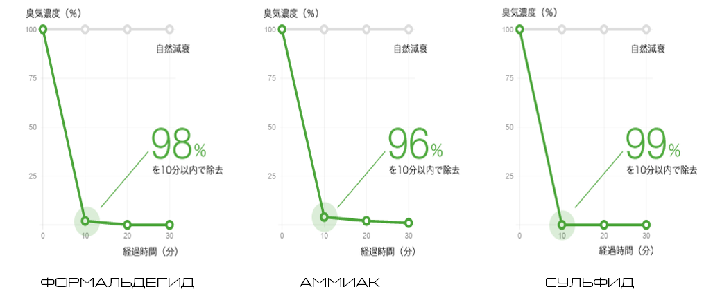Фильтр состоит из двух компонентов: активированный уголь удерживает загрязнители, катализатор способствует их скорейшему разложению.
Панель управления
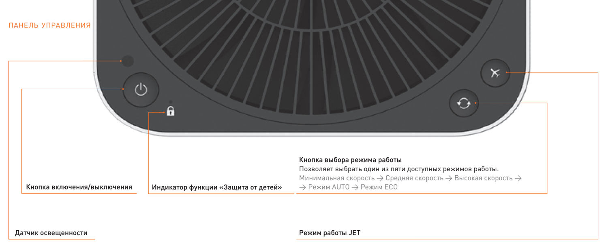А803 управляется тремя кнопками, находящимися на верхней панели. Датчик освещенности корректирует яркость индикации. Управление можно заблокировать.
Ручной режим
Позволяет задать нужную скорость очистки воздуха вручную. В данном режиме доступно 3 скорости работы.
Режим AUTO
В данном режиме устройство в зависимости от показателей, получаемых датчиками запаха, пыли и освещенности, корректирует все необходимые настройки, включая скорость очистки, уровень шума, энергопотребление, яркость панели управления.
Для изменения чувствительности (низкая/высокая) работы датчиков пыли и запаха:
- Выключите устройство
- Нажмите и удерживайте кнопки Включения и Выбора режима до звукового сигнала.
Режим ECO
Наиболее бесшумный и энергоэффективный режим из всех доступных. Устройство автоматически контролирует количество оборотов двигателя. Максимальный шум при работе в данном режиме составляет всего 15 дБ (едва слышимый шум шелеста листьев). Энергопотребление при работе в данном режиме не превышает 4 Вт в час.
Режим JET
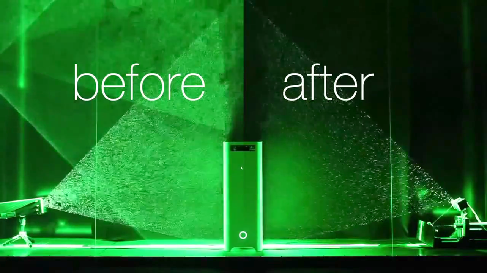Данный режим рекомендуется использовать в условиях, где необходимо очистить воздух или нейтрализовать неприятные запахи в максимально короткий срок. При выборе данного режима устройство переходит в режим максимальной скорости очистки, что позволяет получить полную мощность одним нажатием. В данном режиме доступно 3 вида настроек.
Однократное нажатие кнопки JET. Цикл очистки — 10 минут. Максимальная скорость (5 минут) → Высокая скорость (2,5 минут) → средняя скорость (2,5 минут).
Двойное нажатие кнопки JET. Цикл очистки — 20 минут. Максимальная скорость (10 минут) → Высокая скорость (5 минут) → средняя скорость (5 минут).
Тройное нажатие кнопки JET. Цикл очистки — 30 минут. Максимальная скорость (20 минут) → Высокая скорость (5 минут) → средняя скорость (5 минут).
После завершения выбранного цикла очистки устройство переходит в автоматический режим (AUTO).
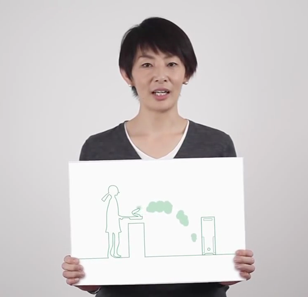После уборки или проветривания помещения в воздух попадает большое количество мелкодисперсной пыли. Для завершения очистки вы можете воспользоваться режимом интенсивной очистки JET
Лёгкость обслуживания
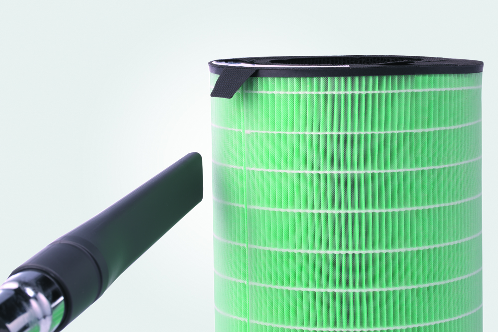Рекомендуется регулярно производить очистку фильтра. Индикатор на передней панели оповестит о необходимости провести эту процедуру. Доступ к фильтру получить очень просто.
Очистка вентилятора
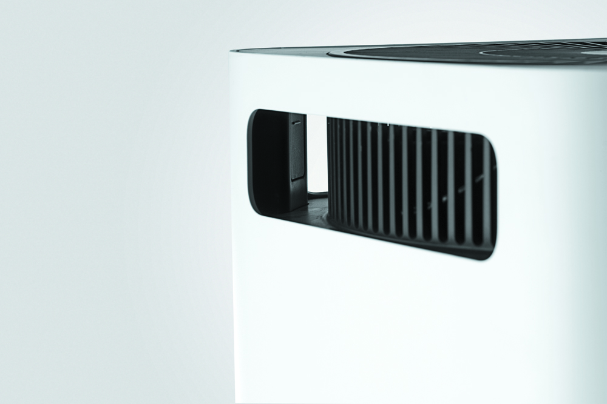Очистка датчика
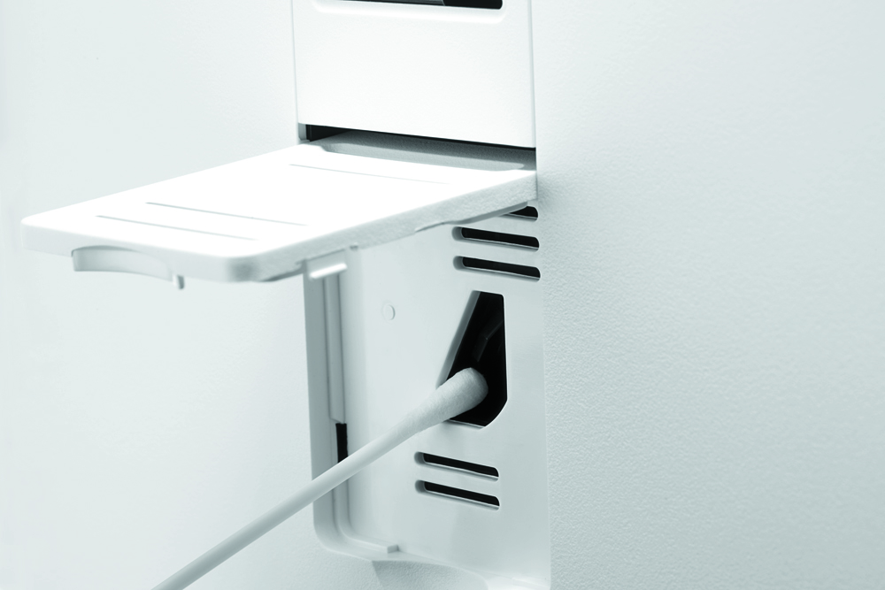Дизайн
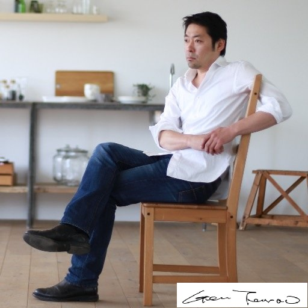Очиститель воздуха А803 обладатель престижных наград в мире дизайна. Дизайнерская работа Ген Терао.
Компактные размеры
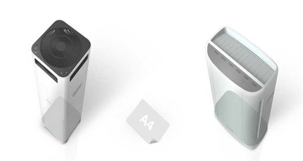Площадь, занимаемая А803, не превышает площади листа бумаги формата А4.
Аргументы для продажи
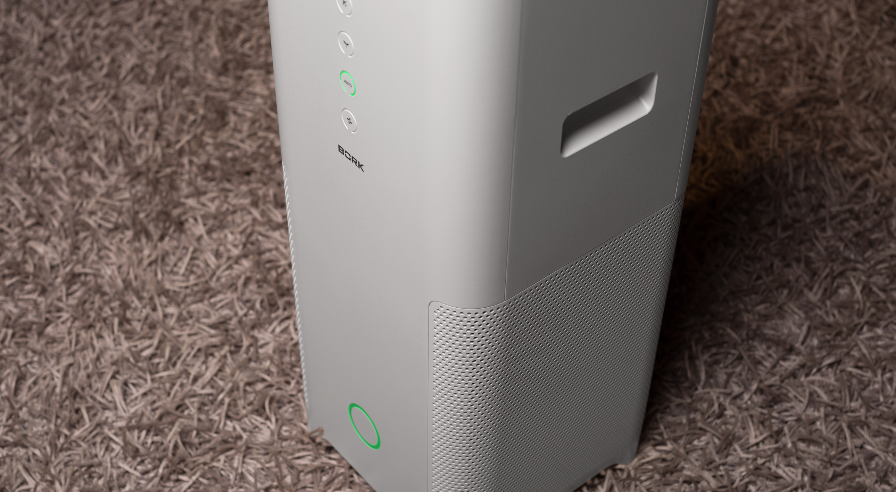- Технология AirEngine
- Режим интенсивной очистки JET
- Высокая эффективность и скорость очистки воздуха
- Максимальный воздухообмен 600 м3/час !!!
- Комбинированный фильтр Green 360
- Компактные размеры – менее листа формата А4
- Датчик света, датчик пыли, датчик газа
- Автоматический режим AUTO
- Энергоэффективный режим ECO
- Низкий уровень шума – 15 Дб
- Низкое энергопотребление – 4 Вт
- Простота управления – 3 кнопки
- Индикация работы прибора с автоматической корректировкой яркости
- Индикация очистки фильтра
- Защита от детей
- Легкость обслуживания
- Разработан в Японии
- Исключительный дизайн от Ген Терао
Технические характеристики
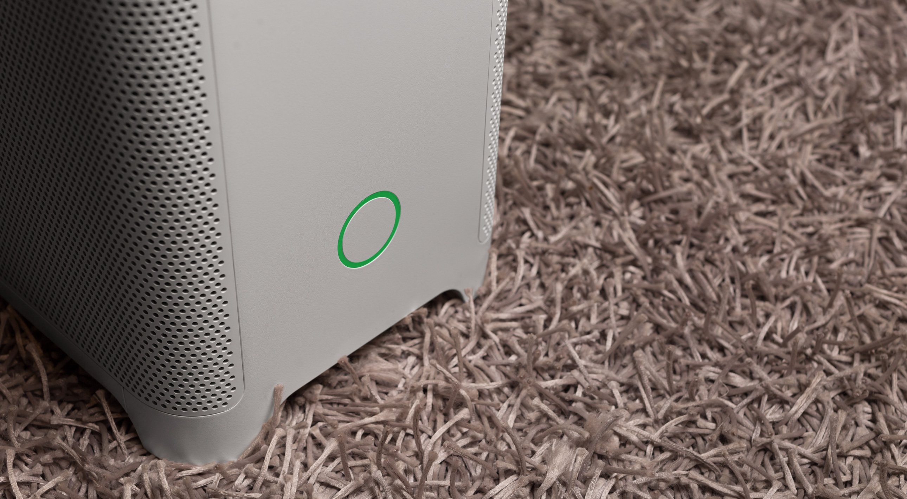
Напряжение: 100–240 В
Частота: 50/60 Гц
Мощность: 72 Вт
Габариты (В×Ш×Г): 700×250×250 мм
Вес: 8 кг
Сделано в Китае
Страна-разработчик: Япония